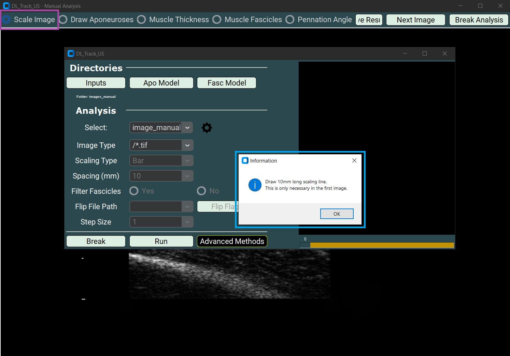
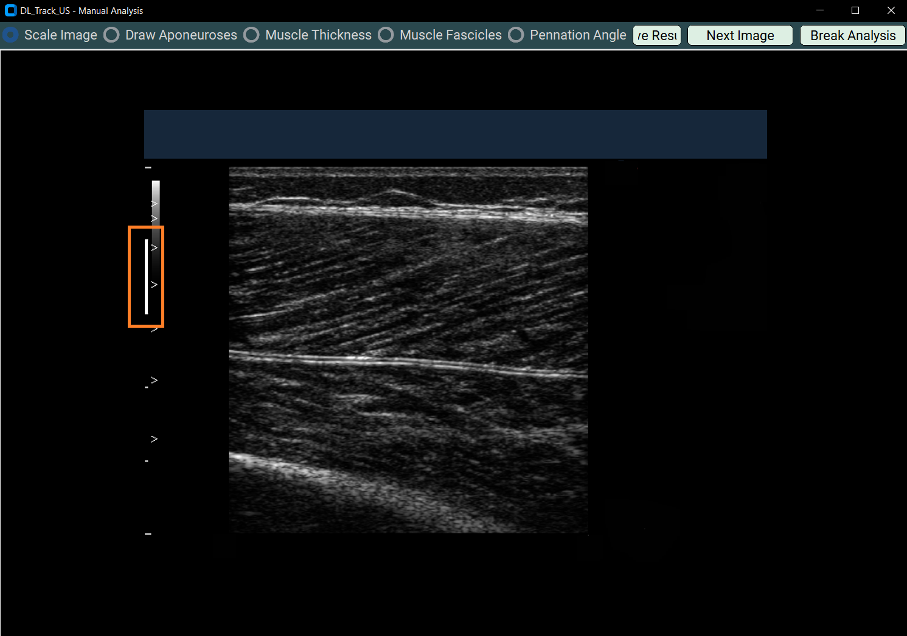
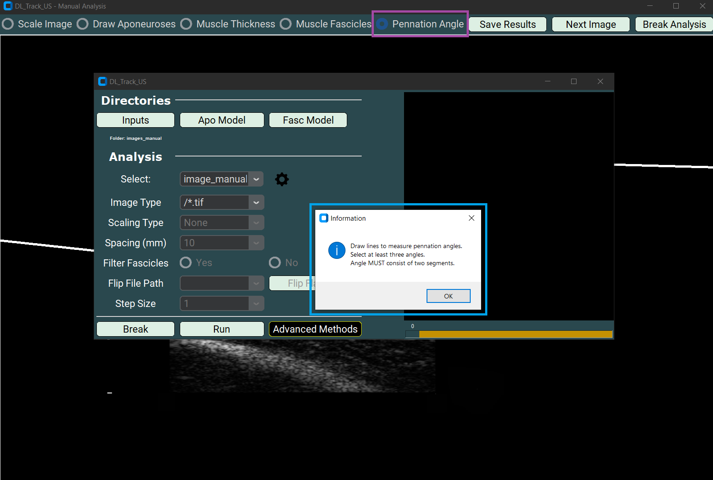
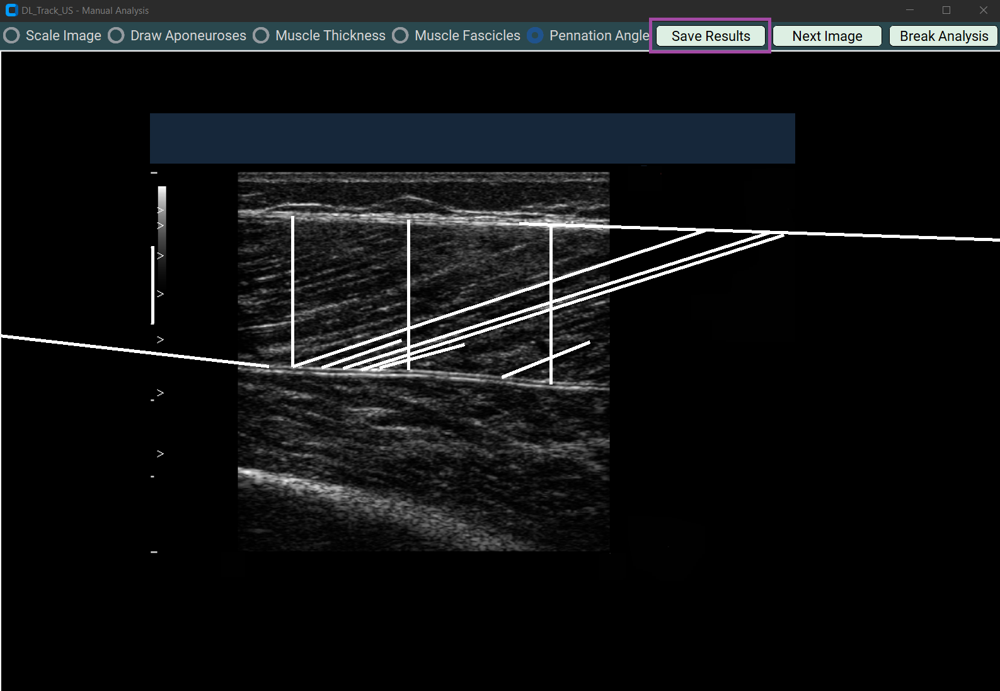
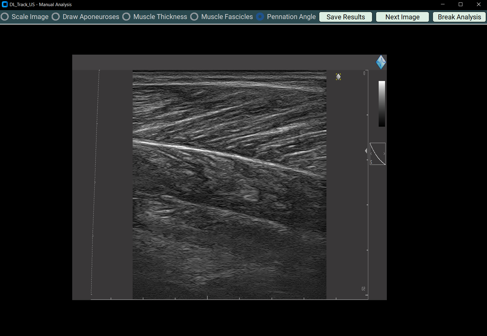
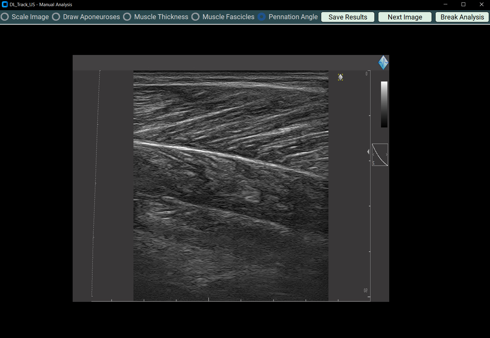
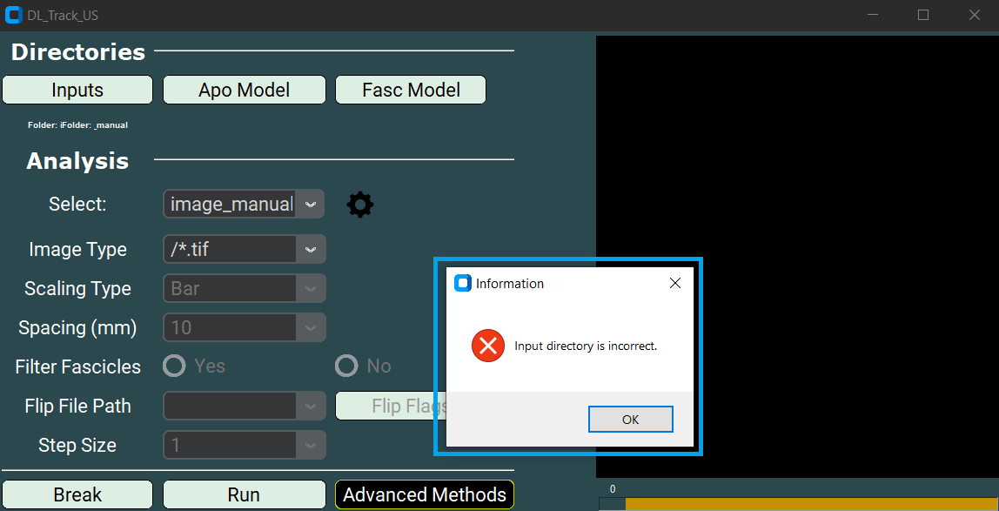

Manual Image Analysis
This page covers the manual image analysis. The images are evaluated manually by drawing the muscle thickness, fascicle length and pennation angles directly on the image. For this type of analysis, single images (not videos) are a prerequisite. These images should be contained in a single folder, like in the “DL_Track_US_example/images_manual” folder.
If you haven’t downloaded this folder yet, please do so now (link: DL_Track_US - Examples & Models). Unzip the folder and put it somewhere accessible.
1. Creating Image Directory
- All images to be analyzed should be in a single folder.
- The “DL_Track_US/image_manual“ folder contains 2 images.

- In contrast to automated image analysis, you do not need a flip_flag.txt file nor do you need neural networks that do predictions.
- In manual image analysis, you are the neural network.
2. Specifying Input Directories in the GUI
- You will begin with specifying the path to the folder containing the images to be analysed.
- In this case we use the “DL_Track_US_example/images_manual” folder.
- By clicking on the Inputs button in the GUI a selection window opens were you need to select the images folder.
- Click Select folder to specify the path in the GUI.

3. Specifying Analysis Parameters
First, please select image_manual from the dropdown-menu.

Next, you need to specify the Image Type.
- The ending of the Image Type must match the ending of your images, otherwise no files are found by DL_Track_US.
- You can either select a pre-specified ending from the dropdown list or type in your own ending.
- Please keep the formatting similar to the Image Types provided in the dropdown list.
- All the images in the “DL_Track_US_example/images_manual” folder are of the Image Type “.tif”.
- Thus, you should select the “/*.tif” Image Type as shown below.

- Once you have specified the Image Type, you can start with the analysis.
- You can start the analysis by clicking the Run button in the main GUI.

4. Manual Analysis of Image
After clicking the Run button in the main GUI, the “Manual Analysis window” opens.
- Here is how it looks like:

Important to note:
- The actual lines you draw are not used during the computation of the architectural parameters.
- The start- and endpoints of each line are relevant.
- The start point is defined as the point where you clicked the left mouse button to start drawing the line.
- The endpoint is defined as the point where you released the left mouse button to stop drawing the line.
- The line follows the cursor as long as the left mouse button is pressed.
- The calculations of the scaling line length, muscle thickness, fascicle length and pennation angle are dependent on the number of specified lines/segments.
- Do NOT click somewhere random on the image during the analysis of a parameter and exactly follow the instructions. If additional clicks happened, start the analysis new by selecting the radiobutton representing the parameter again.
- If you do not follow the instructions presented in this tutorial, we cannot guarantee the correctness of the analysis results.
First of all, you will scale the images manually so that the calculated architectural parameters are returned in centimetre rather than pixel units.
- Draw a one centimetre long straight line in the image.
- The distance of one centimetre is usually recognizable in the scaling bars in the image.
- You can initiate the scaling process by selecting the Scale Image radiobutton in the “Manual Analysis window”.
- A messagebox will appear advising you what to do.

The drawn line should look like this.

As a next step you have the option to extend the muscle aponeuroses to ease the extrapolation of fascicles extending outside of the image.
- Select the Draw Aponeurosis button in the “Manual Analysis window” and draw the aponeurosis lines on the image as shown below.
- A messagebox will appear advising you what to do.


Now you can start with the muscle thickness assessment.
- Select the Muscle Thickness radiobutton in the “Manual Analysis window”.
- A messagebox will appear advising you what to do.
- Draw three straight lines reaching from the superficial to the deep aponeurosis in the middle right and left portion of the muscle image.


Next you can mark single fascicles on the image.
- Select the Muscle Fascicles radiobutton in the “Manual Analysis window”.
- A messagebox will appear advising you what to do.
- Draw at least three fascicles per image in different regions of the image.
- It is possible to extrapolate the fascicles outside of the image region.
- Each fascicles MUST consist of three segments.
- Do not draw more or less segments per fascicles and pay attention to avoid any extra unwanted mouse clicks.
- One segment MUST start where the previous segment ended.
- Take a look at the image sequence below to see how it is done:


Next you can manually analyse the pennation angle.
- Select the radiobutton Pennation Angle.
- A messagebox will appear advising you what to do.
- Draw at least three pennation angles per image at different regions of the image.
- Each drawn pennation angles MUST consist of two segments. The first segment should follow the orientation of the fascicle, the second segment should follow the orientation of the deep aponeurosis. The segments should both originate at the insertion of the fascicle in the deep aponeurosis.
- Please pay attention to avoid unwanted clicks on the image.


5. Saving / Breaking / Next Image
There are three buttons in the “Manual Analysis window” left to explain. The first button is the Save Results button.
- The Save Results button is a very important button!
- Press the Save Results button once you have analyzed all parameters that you wanted to analyze and before continuing with the next image.
- An excel file with the name Manual_Results.xlsx is saved in the directory of the input images upon pressing the Save Results button. Therein, all analysis results are stored. Moreover, by pressing the Save Results, a screenshot of your current analysis is captured and stored. (Note: The image may look strange, as we can only approximate the coordinates and size of the manual analysis on your screen.)
- In your case all files are saved in the “DL_Track_US_example/images_manual” folder.

The second button we haven’t explained yet is the Next Image button.
- By clicking this button, you can proceed to the next image in the input folder (in your case the “DL_Track_US_example/images_manual” folder).
- Please remember to press the Save Results button prior to proceeding to the next images, otherwise you analysis results for this image will be lost.
- When the Next Image button is pressed, the displayed image is updated.
 

The last button we need to explain is the Break Analysis button.
- Pressing this button allows you to terminate the analysis and return to the main GUI window.
- A messagebox will appear asking you if you really want to stop the analysis.
- Once the Break Analysis button is pressed and you answered the messagebox with “YES”, the “Manual Analysis window” will be automatically closed.

When you have saved your results clicking the very important button and followed our instructions during this tutorial, your input directory “DL_Track_US_example/images_manual” should look like this. It should contain the images, saved screenshots, as well as the Manual_Results.xlsx file.

6. Error Handling
Whenever an error occurs during the manual image analysis process, the DL_Track_US GUI will open a messagebox. This looks always similar to this:

We tried to formulate these messageboxes as concise as possible. Just follow their instructions to fix the error and run the analysis anew. In case an error occurs that is not caught by an error messagebox, don’t hesitate to report this in the Q&A section in the DL_Track_US discussion forum. Please take a look here how do best do this.